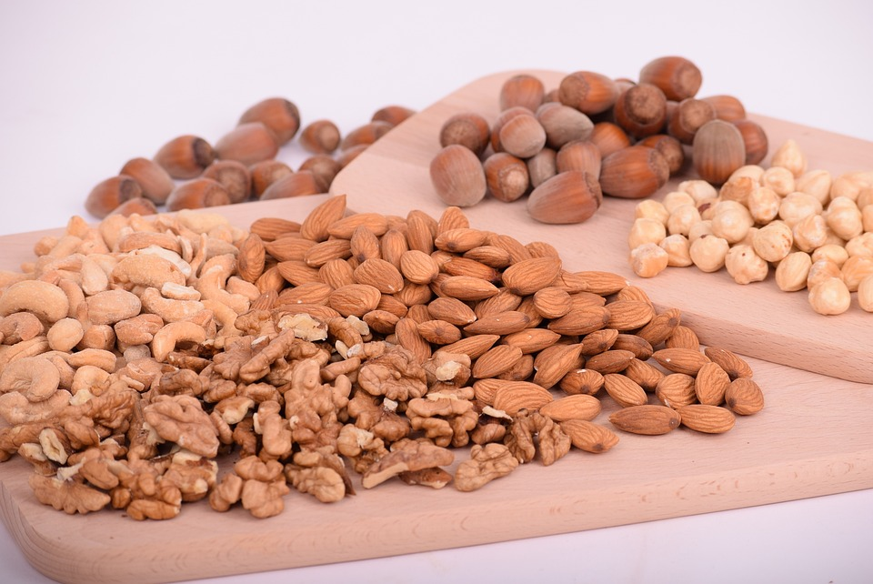
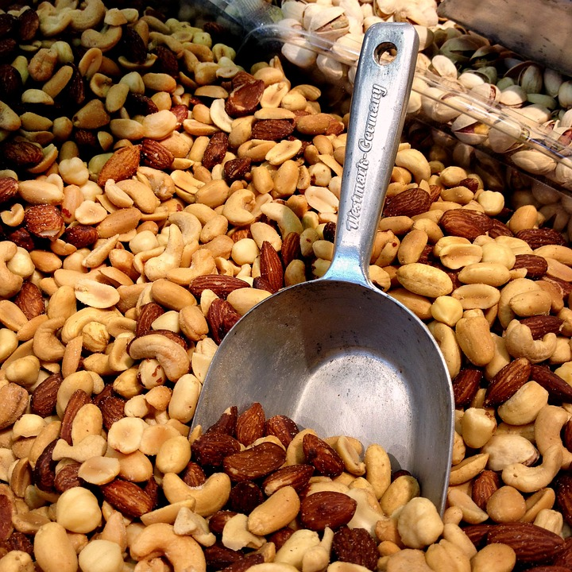
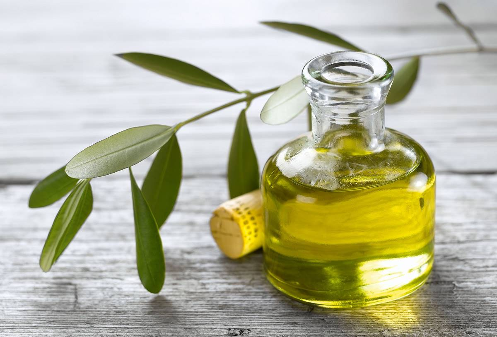
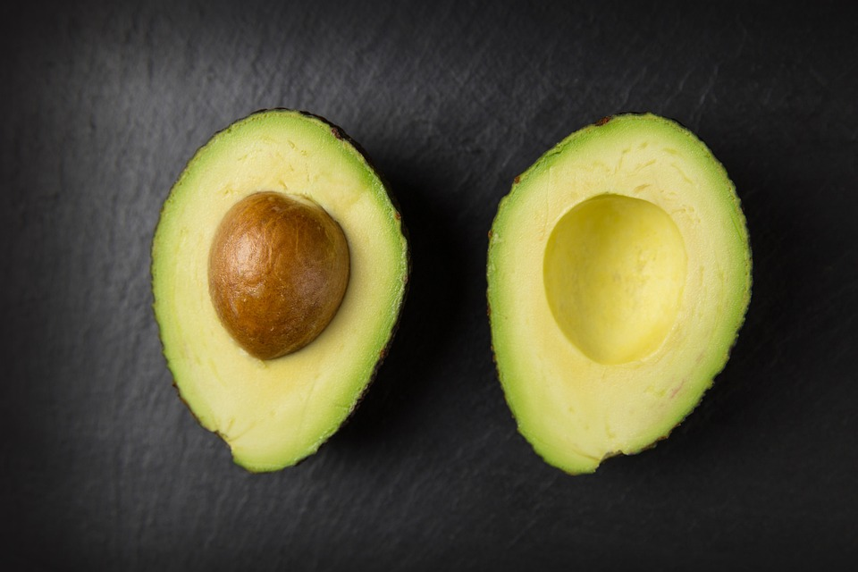

Blue Fish. Salmon, anchovy, sardine, tuna, herring, eel, bonito, horse mackerel, sea bass and mackerel, among others. Unlike other fish, such as swordfish, there is no accumulation of methylmercury in this selection.
Nuts

Nuts. These foods are rich in vegetable protein and fiber, in addition to providing healthy fats. In addition, among the benefits of its consumption, its contribution of vitamins also stands out.
Seeds

Seeds. Like nuts, seeds are also a source of protein and healthy fats. Also, most of them are rich in vitamin B and E, as well as calcium, phosphorus, iron and potassium.
Extra virgin olive oil

Extra virgin olive oil. In line with the above, olive oil contains healthy and essential fats such as Omega-6 and Omega-3.
Avocado

Avocado. Within the group of good fats, its health benefits are multiple. It offers a high content of vitamins (B, E and C, especially) and antioxidants.